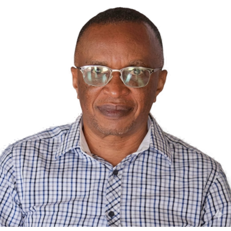

Executive Director
Eng. Samuel Njuguna Ndirangu
Strategy and day-to-day running of the company: planning, operations, and project implementation and management.
- BSc Agricultural Engineering
- MA Economic Policy and Management
- PhD candidate